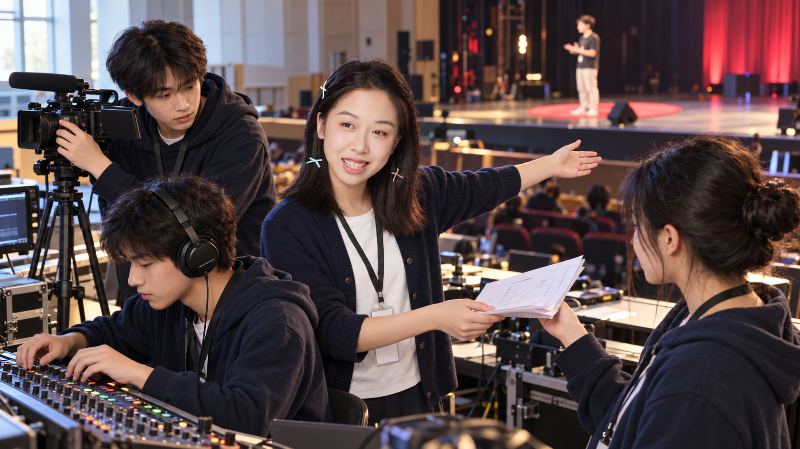
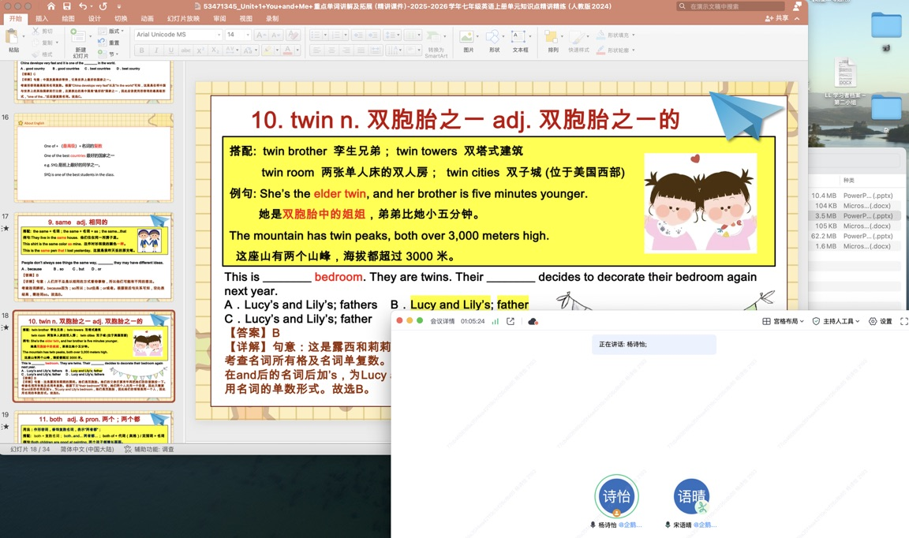
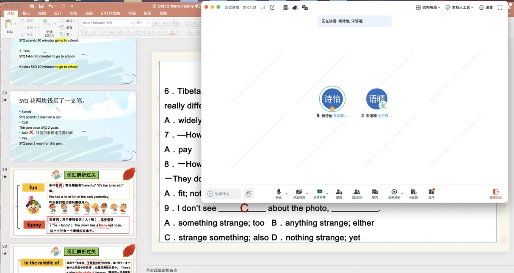

HiMCM · Mathematical modeling
As captain of our four-person HiMCM team, I helped build a model of how responders search a burning building as smoke spreads and visibility changes. We started out using different floor plans and time steps, so I helped us agree on assumptions before we combined our work. Our paper became one of 49 finalists among 1,091 teams.
One result caught me off guard. Searching the most dangerous floor first could make the whole search take longer. We’d also assumed that opening a door wouldn’t change how smoke spread. I came away with two questions I’d want to answer before recommending a route. Who gets reached first, and how much does that answer depend on what we assumed about the building?
More from this activity
No-three-in-a-line · Independent research
I spent days arranging dots on a three-row grid before I thought to number the columns. I wanted to know how many points I could place without three lying on a line. Once I numbered them, I could see that three points lined up when the middle column number was the average of the other two.
I wrote a Python program to explore grids up to twenty columns and used counting and explicit constructions to prove the result for any number of columns. The search gave me patterns to follow. The part I enjoyed most was finally being able to explain why the pattern had to hold.
More from this activity
Ironpulse 6941 · Building with a team
I joined IronPulse with a camera. I wanted to understand the mechanisms I was filming, so I started learning Onshape, machining, and programming. When I became Head of Publicity, I planned coverage, wrote recruitment features, and ran seven workshops on photography, filming, and editing.
When a newer member finished a feature without sending me a draft, I was proud and caught myself wishing I’d seen it first. I’d spent all that time helping people feel confident making their own choices. Here was someone doing exactly that, and I was still getting used to stepping back.
Greenvolt Spark · Energy & environment
My teammate and I built Greenvolt Spark to see whether wave energy could power coastal warning sensors. I led the market research and business planning, designed the parts in CAD, and built the physical prototype. My teammate focused on the engineering principles and technical feasibility. We presented it together at the Conrad Challenge and received a silver medal.
At our presentation, Dr. Cui Lin suggested testing it in a wave tank. I liked that the conversation ended with a practical question we could investigate. We’d built a prototype we could explain to a panel. The next thing I wanted to know was how it would behave under more realistic wave conditions.
Generation AI · Computer vision
I built a program that finds faces in photographs, lines them up, classifies expressions, and separately checks identity. I wrote the research paper with guidance from Dr. Minglong Li. When I looked beyond the overall accuracy, I saw that the program struggled with disgust, one of the expressions with fewer examples. That led me to try resampling and class weights.
I also changed how I described the project. I’d been calling it emotion recognition, but the program was predicting the label someone had attached to a photograph. I could measure how well it predicted that label. How a person actually felt was a different question.
ScentSense · Code becomes an object
My partner and I built ScentSense to turn a facial-expression prediction into something you could experience away from a screen. I wrote the software, connected a camera and four scent channels to a Raspberry Pi, and worked through eight versions of the housing. When the scent kept changing with each new frame, I made the software vote across five frames before switching.
At our demonstration at Zhuqiao Primary School, a student told me they were tired when the device read their expression as sad. The device was giving a steadier answer, and it could still get that answer wrong. If I build it again, I’d like to let people correct the label or pick a scent themselves.
ClearPath · Technology meets feasibility
At MeckUp Quest, my five-person team built an XRP robot to recognize and move small obstacles on a simulated road after a typhoon. I worked on programming and object recognition. After we placed third, I put together a budget for five kits and revised the funding proposal three times, working out what parts and student workshops would cost.
The funding proposal was waitlisted. I could put a price on five sets of parts, but I was still left with questions about training and repairs. And if we ever had several blocked roads and only one robot, how would we decide where to send it first?
More from this activity
Public Forum debate · Competitor & judge
I usually compete as the second speaker in Public Forum. At the 2024 TOC Asia Spring Dragon Cup, my partner and I prepared both sides of a motion about vocational training. I kept checking who was actually represented in the employment figures we wanted to cite. Would an advantage for one age group hold for everyone we were talking about?
In crossfire, I learned to listen long enough to understand why the other team’s evidence mattered to their argument. Judging at PHATE gave me a chance to practice that from the other side of the table. I had to explain which claims each team had supported and why.
PHocus · Writer, editor & mentor
I started at PHocus writing about things I wanted to understand, like humanoid robots and Australia’s social media rules for children. As a senior editor, I used to jump straight to what I thought was the strongest version of a sentence. Now I ask what the writer meant first. It’s their piece, and I want them to feel comfortable making their own choices when they revise it.
I put up an anonymous discussion board beside a busy staircase so students could respond to our articles in a few lines. Some who started by leaving comments went on to submit articles or join the editorial team. I remember how much encouragement I needed to share my own writing. I liked that their first step could be as small as leaving a note.
Ironpulse · Photography & scouting
In our IronPulse photography workshops, I teach aperture, shutter speed, and ISO through examples. Before getting into camera settings, I like asking what someone unfamiliar with our robot should learn from the picture. Once we’ve talked through how the mechanism works, the person holding the camera can decide what to show.
I also led scouting at our FRC regionals in Sanya, Istanbul, and Shanghai. With a camera, I’m looking for the detail that tells a story. In the stands, I’m looking for the detail my teammates can use to make a decision about a match.
More from this activity
Drama & PTV · Stories behind the scenes
As multimedia lead for our school drama productions, I made opening videos, designed projections, and adjusted music and sound effects to fit each scene. I put every cue into a backstage script. During the performance I followed the actors closely so the visuals and sound would come in when the scene needed them.
Through Pinghe Television I also filmed school events and worked on a robotics documentary. With both kinds of work, I enjoy figuring out what the audience needs to see or hear at a particular moment. At the play, some of the work I was proudest of happened when the audience could simply stay with the story.
More from this activity
Supplied activity material
AI illustration · imagined scene Songwriting · A different language for connection
I write lyrics in rap, country, and Chinese folk styles. I used rap to write about trying to hear my own voice through other people’s expectations. In Time Machine, I imagined building a time machine out of memories with a friend on the other side of an ocean. For the folk song, I came back to old photographs, a lake, and family.
I spend a lot of time editing articles to make an idea as clear as I can. In a song, I like being able to leave a photograph or a place in the lyrics and let it carry some of what I wanted to say.
More from this activity
Wenyuan · Debate tutoring
At Wenyuan, I help younger students learn Asian Parliamentary debate. I translated the rules into Chinese, wrote a sample case and chair scripts, and judged more than ten rounds.
A translation could be technically correct and still leave someone wondering when they were supposed to speak. I learned to walk students through an example, from making a claim to answering a rebuttal. I wanted them to spend their practice time finding their own arguments instead of getting stuck on the format.
Tencent · English tutoring in rural Henan
AI illustration · online teaching connection
Actual lesson · vocabulary and examples
Actual lesson · grammar and review
I teach English online at Fucun School through Tencent’s volunteer program. I use the students’ Grade 5 and Grade 7 textbooks to prepare vocabulary exercises, grammar explanations, and quizzes. The mistakes we see in one lesson help me decide what to return to in the next.
A fifth grader once asked me the same grammar question three times in one class. I kept looking for a way to explain it that would make sense to her. When she later gave me a little red flower, I put it on my laptop. I used to count the lessons I’d finished. The flower makes me think about whether a student feels comfortable asking again.
More from this activity
Supplied activity materialSupplied activity material